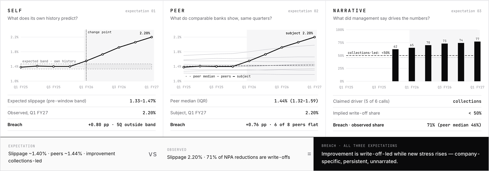

Round 1 · Solution briefTRACK A — BANKING, NBFCs & FINANCIAL SERVICESTeam NameFinding the Next Signal · ATMOS 2026
SIGNALAutonomous Financial Research01 / 02
Computed, not retrieved.
SIGNAL discovers financial signals by finding persistent breaches of three expectations — a company's own history, its peers, and its management's narrative — and reports a breach only after it survives a pre-registered attempt to falsify it. Find the breach. Trace the evidence. Try to break the hypothesis.
01
EXPECT
self · peer · narrative
02
BREACH
persistent, on drivers
03
INVESTIGATE
mechanism + consequence
04
TRIANGULATE
independent families
05
CHALLENGE
9 pre-registered tests
06
SURVIVE
alternatives fail
07
DISCOVER
auditable to the line
01The problem
A non-obvious finding is, almost by definition, not written down anywhere. Retrieval can only return what someone has already said.
Dashboardsretrieve known metrics — headline ratios, not the drivers beneath them.
Summarisersretrieve known narratives; a “critic” prompt argues — it does not test.
The gapNo one systematically computes where history ≠ peers ≠ narrative, then tries to explain it away before calling it a finding.
02The mechanism — three expectations
expectation vs observed = breach
SELFWhat the company's own history predicts for each decomposed driver
PEERWhat same-archetype peers show in the same quarters — removes sector and macro effects
NARRATIVEWhat management said drives the numbers — attributions and guidance, timestamped
Expectation what history, peers and management imply
vs
Observed reconciled numbers from primary filings
=
Breach a candidate — not yet a discovery
03From candidate to discovery — every gate must pass
the candidate generator is only the beginning
G1
Reconciled numbers
Facts satisfy accounting identities.
G2
Corroborated
≥2 independent source families.
G3
Company-specific
Survives same-quarter peer residuals.
G4
Falsification survived
9 alternatives, tested as code.
G5
Testable consequence
Predicts data it was not built from.
G6
Temporally consistent
Persistent; timing coheres.

Prototype · three-expectation view of a discoveryIllustrative prototype data · synthetic panel
04Why it is different
sophisticated where the problem demands it — simple everywhere else
Computed, not retrieved
Candidates come from accounting-identity driver trees and a management claim ledger — never from mining arbitrary correlations.
The LLM never types a number
Every figure is a rendered reference to a computed node; the language model reads text and writes digit-free prose.
Independent evidence families
Company, peer filings, regulator, rating agency. Syndicated news collapses to one — and is never sole evidence.
Counter-hypotheses tested as code
Sector, regulatory, accounting, denominator, one-off, data and mechanism alternatives — each with a fixed test.
Narrative vs numbers, in time
Bitemporal facts: when the change began, when it became visible, when management's language moved, when the press noticed.
Full provenance + published funnel
Number → formula → inputs → document → page → passage. Every rejected candidate is shown with its reason.
ATMOS 2026 · BITS Pilani, Hyderabad CampusScreens: prototype on simulated data — not findings about any company
How SIGNAL researchesAny listed Track A company · no company tuningTeam NameFinding the Next Signal · ATMOS 2026
SIGNALCompany in → auditable discovery out · live target 5–7 min02 / 02
05Research workflow
code by default · the language model only where language is the problem
01code
INGEST
Exchange filings, XBRL, transcripts, RBI, ratings
02code+llm
NORMALIZE
Typed facts, page anchors, reconciliation
03code+llm
EXPECT
History, 8 peers, claim ledger
04code
BREACH
Robust surprise, persistence
05code
TRIANGULATE
Counted by source family
06code
FALSIFY
9 tests + corollaries
07code
RANK
Gates, score, strength rule
08llm
DISCOVER
8 elements, digit-free prose
06Discovery funnel
none hand-picked
143
Candidate breachesany expectation, any driver
31
Structurally validreconciled · ≥2Q · no discontinuity